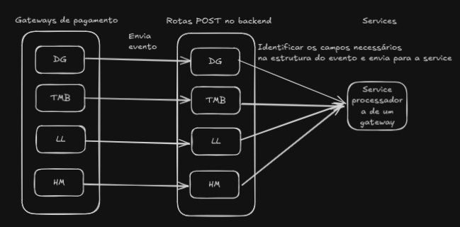

Visão Geral
Este documento descreve o funcionamento do sistema de processamento de webhooks, que centraliza e padroniza a integração com diferentes gateways de pagamento e serviços externos. O sistema é projetado para lidar com eventos de compra, estorno e outras interações, oferecendo uma solução escalável e padronizada.
Estrutura do Sistema
Rotas
As rotas são responsáveis por receber e validar os dados dos webhooks, encaminhando-os para a camada de serviços para processamento. Cada rota atende a um gateway ou serviço específico. 
Rotas Principais
-
/digital (
payment_gateways.py): Processa webhooks do gateway Digital Guru. -
/tmb (
payment_gateways.py): Processa webhooks do gateway TMB. -
/curseduca (
curseduca.py): Processa webhooks do sistema Curseduca. -
/telegram (
telegram.py): Processa notificações e comandos relacionados a bots no Telegram.
Camada de Serviços
A camada de serviços centraliza a lógica de processamento dos dados recebidos, garantindo a uniformidade e escalabilidade do sistema. A principal service utilizada é a PaymentGatewayService, que abstrai as operações comuns entre diferentes gateways.
Dados Recebidos pela Service
-
Dados do cliente:
first_name,last_name,email,cpf,phone. -
Dados do produto:
product_name,amount,validity_in_months. -
Status do pagamento: "Efetivado" ou "Cancelado".
Fluxo de Processamento
-
Validação de Dados: Os dados recebidos são validados para garantir consistência.
-
Operações com Usuários: Verifica ou cria o usuário no banco de dados.
-
Operações com Produtos: Verifica ou cria o produto no banco de dados.
-
Registro de Transações: Cria ou atualiza transações no sistema, dependendo do status recebido.
Exemplo de Processamento de Webhook
-
A rota recebe um JSON do webhook.
-
Os dados obrigatórios, como email e nome do produto, são extraídos.
-
A rota encaminha esses dados para a
PaymentGatewayService. -
A service processa os dados, interage com o banco de dados e registra as informações necessárias.
-
A rota retorna uma resposta indicando sucesso ou erro.
Detalhes dos Arquivos
1. Arquivo payment_gateways.py
Define as rotas principais para integração com gateways de pagamento.
-
Rota Digital Guru: Extraí dados como
email,produtoecpfdo JSON recebido e os encaminha para aPaymentGatewayService. -
Rota TMB: Processa os dados de forma similar, adaptada para o formato do gateway TMB.
-
Rota LASTLINK: Processa os dados de forma similar, adaptada para o mesmo formato
-
Rota Hotmart: Processa os dados de forma similiar, e adaptada para o formato semelhante.
2. Arquivo process_all.py
Implementa a classe ProcessAllPaymentGateways, que centraliza a lógica de processamento.
Principais Funcionalidades
-
Verifica ou cria usuários.
-
Verifica ou cria produtos.
-
Registra transações de pagamento ou estorno.
3. Arquivo curseduca.py
Implementa uma rota para processar webhooks do sistema Curseduca, com foco em validação de email e chamada para o serviço CurseducaService.
4. Arquivo telegram.py
Processa notificações e comandos recebidos por bots no Telegram, com integração aos serviços BotChefeService e BotNormalService.
Escalabilidade e Adição de Novos Webhooks
O sistema é projetado para permitir a fácil integração de novos webhooks. Para adicionar um novo gateway ou serviço:
-
Crie uma nova rota no arquivo apropriado.
-
Extraia os dados necessários do JSON recebido.
-
Encaminhe os dados para a
PaymentGatewayServiceou outro serviço relevante.
Conclusão
O sistema de webhooks oferece uma solução robusta e padronizada para integração com diferentes gateways de pagamento e serviços externos. Sua estrutura centralizada facilita a manutenção e permite escalabilidade para futuras integrações, garantindo maior organização e eficiência.